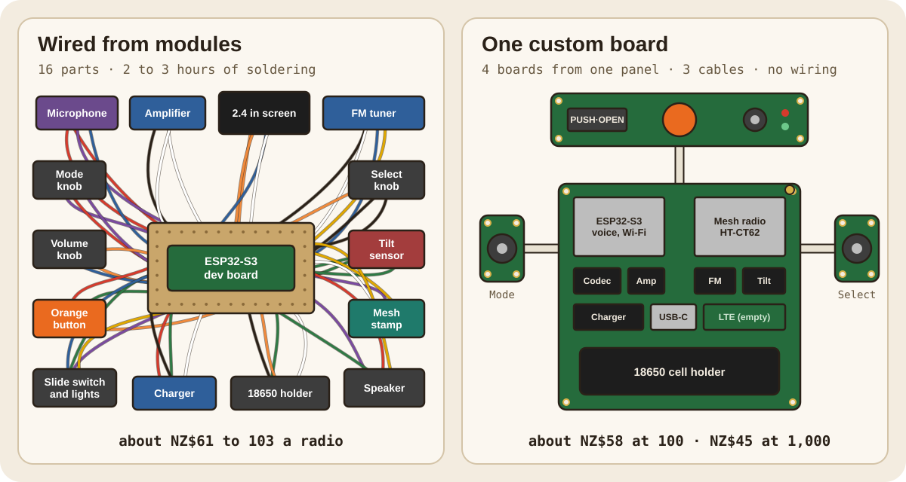
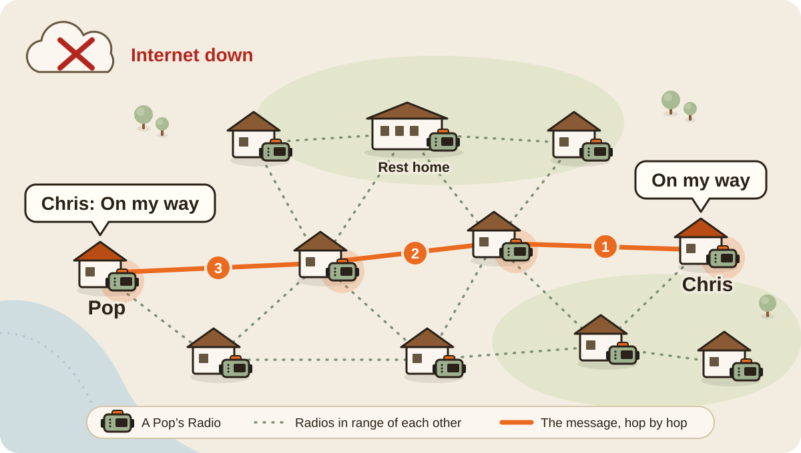

The board, the costs and the mesh
The front page says what Pop's Radio is. This page says how it's made, what it costs, how people get one, and how the mesh works.
Nothing is built yet. Prices are November 2026 list prices and estimates, not quotes. The full working is in the custom board report.
What's decided
These were ideas until 16 November 2026. Now they are the plan. Decided doesn't mean tested: each one has a test further down that could change it.
| Decision | What it means | Before |
|---|---|---|
| One radio | The stout green one: an orange button, a switch and a volume knob on top, a big knob on each side, a strap | One of four shapes |
| Five modes | Talk, FM radio, internet radio, Play and Mesh. The family chooses which appear | Talk, plus ideas |
| One custom board | A main board and three small ones, assembled and tested by the factory | Hand-wired modules |
| The screen | A 2.4 inch colour screen with a backlight that dims. It plugs in, so it can be changed | Not chosen |
| A mesh radio on its own chip | A second small chip runs Meshtastic, unchanged, beside the main chip | Three options |
| The mesh is always on | Every Pop's Radio passes messages along, on its stand or off it | Only when Wi-Fi was down |
| Kits and built radios | Buy the boards ready-made and add a case, or buy it finished. The plans stay free | One line in a table |
The full list, with reasons, is in Design Decisions.
The board
The case has a knob on the left, a knob on the right and controls on top. One board can't reach three faces, so there are four, cut from one panel and joined by three short cables.


| What it does | The part | Why this one |
|---|---|---|
| Voice, Wi-Fi, the screen, updates | ESP32-S3 module | Already approved as a radio module, and the same chip the hand-wired build uses |
| The mesh | Heltec HT-CT62 | Runs Meshtastic as it comes, on its own chip, so the mesh stays on while Pop talks |
| Hearing and speaking | Audio codec, a tiny microphone, a 3 W amplifier | The amplifier runs from a 5 V supply, so it's as loud on battery as on the stand |
| FM radio | RDA5807M tuner | Plays through the same audio chip. Its aerial is a wire in the strap |
| Lying on its back for games | Tilt sensor | Knows upright from flat |
| The screen | 2.4 inch colour TFT, 320 × 240 | Quick enough for Pong, readable at night, about a seventh of the price of a paper-like screen |
| Three knobs | Rotary encoders that also press | Turn freely with no end stops |
| The orange button | A printed cap over a small switch | Cheaper than an arcade button. The feel gets tried with Pop |
| Power | One 18650 cell, a charger that runs the radio while it charges, USB-C | It lives on a stand, so it must charge and play at once |
| Homes with no Wi-Fi | A space for a mobile-data modem | Left empty unless needed |
How it adds up
Mouth to ear, through the service and back. A little more on mobile data. Emergency-service radio networks measure about 0.4 s.
With the mesh always on and 20 minutes of talk a day. Enough for most power cuts. It lives on its stand the rest of the time.
Running a channel costs a dollar or two a year. Each built set comes with its channels, paid for life.
For 20 minutes a day. Only matters on a SIM card; at home it uses the Wi-Fi.
Estimates from our research. Real figures get measured on the bench.
What it costs to make
A custom board is worth doing mostly for the hours and the reliability. The parts only get a little cheaper.
One kit, landed in New Zealand
| 100 made | 1,000 made | |
|---|---|---|
| Parts | US$22.84 | US$18.41 |
| Board and assembly | US$4.20 | US$2.70 |
| Freight | US$1.00 | US$0.40 |
| In NZ$, with GST | about $58 | about $45 |
Before the case, the speaker and the battery cell. The mesh chip is the dearest part, about 30% of the parts.
Against wiring it by hand
| Build | Each | Soldering |
|---|---|---|
| Modules, bare mesh chip | about $61 | 2 to 3 hours |
| Modules, ready-made mesh board | about $103 | 2 to 3 hours |
| Custom board, 100 | about $58 | None |
| Custom board, 1,000 | about $45 | None |
At 100 the board saves about NZ$3 a radio and all the soldering. At 1,000 it saves about NZ$16, a quarter. Against the ready-made mesh board it saves more than half.
Where the savings come from
The biggest single saving, and it needs the cash up front.
Lithium cells are awkward to air-freight and easy to buy here.
Against a paper-like one. It glows, so it gets a daylight test with Pop.
Per radio. 100 radios by hand is 200 to 300 hours.
One saving not taken: leaving the mesh chip off would save about NZ$14 a radio. It stays on every radio, because a mesh needs radios.
How people get one
Three ways, from most work to least. All three end up as the same radio, on the same channels and the same mesh.
| The plans | A kit | A built radio | |
|---|---|---|---|
| Who it's for | Makers building for their own family | Families who can use a screwdriver, schools and community workshops | Everyone else |
| What you get | Parts list, board files, a case to print or to cut from plywood, the firmware | All four boards assembled, tested and loaded, the screen, cables, both antennas, a setup card | A finished radio, charged and paired |
| What you add | Everything | A case (make ours from the plans, or buy it made), a speaker and a battery cell | Nothing |
| Soldering | 2 to 3 hours | None | None |
| Price | Free. Parts from about NZ$61 | About NZ$89 to 99 for the first 100, towards NZ$79 at 1,000 | Not set yet |
| Channels | Run your own service, or buy channels | Bought from the price list, from NZ$35 once | Come with it, paid for life |
The case, two ways
| 3D printed | Plywood | |
|---|---|---|
| What it is | The sage green case in the pictures, in two halves, with rounded corners | A box of six flat panels with finger joints, about 6 mm thick, the same 220 × 125 × 80 mm |
| The free plan | Files to print | A one-page drawing to cut by hand, and a cutting file for a laser cutter |
| Tools | A 3D printer, or a library or makerspace that has one | A laser cutter, or a fretsaw and a drill. Wood glue and sandpaper |
| Or buy it made | A printed case | A finished box: glued, sanded and oiled, with the back panel left to screw on |
| Looks like | A 1960s portable radio | A piece of furniture. Square edges, with the corners sanded round |
The same boards fit both. The knobs and the orange button cap are small printed parts either way. The plywood plan isn't drawn yet, and neither case has a price.
The plans stay free
For anyone building for their own family. Selling radios or kits needs a licence from us.
No subscription for the radio
Money comes from a margin on kits and built radios, extra channels, and the family app.
Not for sale yet
Prices are suggestions. A radio has to be tested and declared before it can be sold here, and that comes before a big batch.
The mesh
A second radio in every Pop's Radio, on 915 MHz. It needs no internet, and reaches much further than Wi-Fi. Radios in range pass short text messages to each other, hop by hop. It is always on, and every radio takes part.


What it does
- Messages when the internet is down. A short text from the family shows in big letters, with a chime.
- "I'm OK" from Pop. In Mesh mode the right-hand knob picks a ready-made message and a press sends it.
- A link for the neighbours. It passes other people's messages along, whether or not its own family uses the mesh.
What it doesn't
- Carry live voice. The mesh is far too slow. Hold to talk still needs Wi-Fi or mobile data.
- Promise delivery. A message needs a chain of radios between the two homes. Sometimes there won't be one.
- Replace 111. It is not an emergency service.
- Listen. The mesh chip has no wire to the microphone.
How it's set
| On or off | Always on, on the stand and on battery |
| Other people's messages | Passed along, never shown |
| The family's messages | On the family's own channel, with its own key |
| Location | Never sent. There is no GPS on the board |
| Name on the mesh | A nickname, not Pop's real name |
| Kids' mini phone | No mesh chip. No strangers, ever |
What always on costs
Battery
About 3 days off the stand, against about 13 with the mesh off. Both are estimates. It mostly matters in a power cut, which is when the mesh matters too.
About NZ$14 a radio
The mesh chip and its antenna are the dearest parts on the board.
A busier mesh
Many new radios in one city can crowd the channel. We match the local settings, and talk to the local mesh group before a big batch.
It works with Meshtastic, which is open-source. We call the feature "Mesh" and ship Meshtastic's own software, unchanged, on its own chip.
Still to prove
Any of these could send a decision back to the drawing board.
| The test | What it could change |
|---|---|
| Pop in front of the simulator, then a hand-wired radio | Whether more than Talk helps him or confuses him |
| The screen in daylight and by the bed | Which screen |
| The printed button cap under Pop's palm | The button |
| Battery life with the mesh always on | Always on |
| Mesh range from inside the case, inside a house | Whether the antenna can stay inside |
| FM with the aerial in the strap | Whether FM stays |
| A plywood box built from the plan, with the boards in it | Panel thickness, the joints, and how the speaker sounds in wood |
| A real quote from the board maker | Every price on this page |
| Radio testing in the 915 MHz band, and the regulator's view on kits | When kits can be sold |
Radio testing is estimated at US$3,000 to 8,000 for a product built on approved modules. Over 100 kits that is NZ$54 to 145 each; over 1,000 it is NZ$5 to 15. So the first 100 are a trial, and certification comes before the bigger batch.
Other shapes we looked at
These came first: one knob, a small screen and Wi-Fi only. They are generated concept pictures. Tap one to see it full size.

The first bedside radio
Where we started: one knob and a toggle switch on a sloped front.

Classic handheld
The walkie-talkie shape everyone already knows.

Pocket pebble
Small enough for a pocket. The knob is a ring around the button.

The pebble's back
A clip for a belt and a loop for a lanyard.
The parts of that first radio

That simpler radio came to about NZ$35 to 50 in parts. The radio we're building now has three knobs, a bigger screen, FM, a tilt sensor, a bigger battery and the mesh radio, which is why its parts list is longer. New pictures of every part, and of the custom board, are still to be made; the prompts are written.